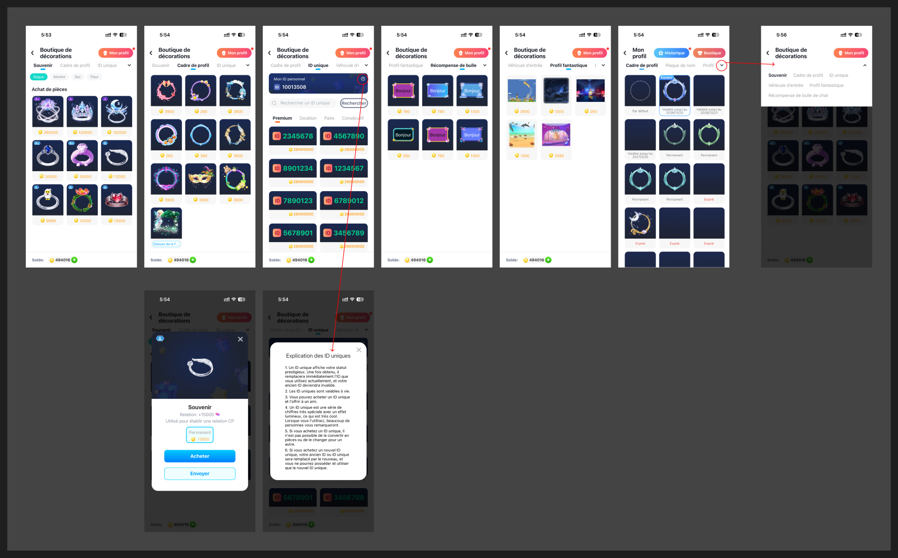
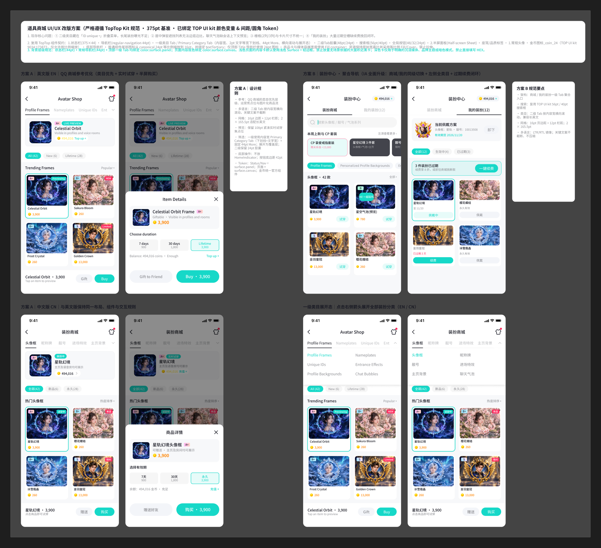

线上现状Before · 9 states

内部分享 · 设计 & 产品 · 2026.11
让规范可读、协作有边界
Kit 定义边界，Portal（设计系统网站）承载共识，设计继续在 Figma 出终稿；产品用 Agent（本机 Cursor AI）做可评审的探索，而不是未对齐 Kit 的非标原型。
Before / After
Before · 典型问题
After · 我们想要的
✕ 自绘 · 未绑 Token
✓ 契约组件 · explore 可评审
Platform · 一件事讲清
不是低配 Figma，也不是默认把代码交给研发——specs/（契约 YAML） + Portal（组件 Web 预览） 是全员可读的规范；本机 Cursor 读仓库与 Catalog，按 Skills 搭可评审原型。
组件真预览、原则、交互说明。
Token、变体、门禁；L3 不得发明新 Token。
探索标 explore · kitGap 回补契约 · 终点 Figma 终稿。
How-to · 原型工作台
推理在本机 Cursor，不依赖 Portal 托管模型。Agent 默认读取本仓库代码、specs/、.agents/skills/；你在浏览器打开 Portal 对照组件真预览。
git clone 仓库 → npm install → npm run portal:dev 打开 localhost:3000（/components 看规范预览，/canvas 看已登记原型）。
对话中 @ 相关文件或说明场景；可先说「用 toptop-design-bundle 路由」。Agent 会查 YAML、MDX、Catalog，而不是猜视觉值。
飞书文档链接或粘贴 PRD 要点 · 截图 / Figma 链接 · 文字用户故事。材料进对话上下文，由你本机 Agent 解析（非必须飞书机器人）。
映射组件栈 → 实现可运行页面 → 可选 toptop-design-review 输出 P0/P1/P2 → 路由登记 /canvas 评审。进研发前仍由设计 Figma 收口。
Skills · 组合运用
统一从 toptop-design-bundle（选型入口） 进；下表是内部分享最常用组合，可按任务裁剪。
| 你想做… | 主 Skill | 常配合 |
|---|---|---|
| Kit 较全，严格落地一页 | toptop-design-system |
toptop-design-review · verify:mvp |
| Kit 不全，先跑通主流程 | toptop-prototype-studio |
Hybrid + kitGap 清单 → 设计回补 spec |
| 只有截图，要对齐像素 | yueban-image-to-code |
toptop-design-system · review |
| 评审前自查规范/交互 | toptop-design-review |
附实现路径 + 截图证据 |
| 深度设计质询 | 5-dim-review |
评审稿定稿前（monkren-design） |
Case Study · 道具商城
先读取线上 9 个状态，定位类目曝光、预览购买、栅格一致性和续费闭环问题；再在需求设计文件内完成两条优化方向，正式 TOP UI Kit 不做变更。


类目从折叠菜单前置；方案 A 保留商城心智，增加实时预览与半屏购买；方案 B 聚合商城 / 我的装扮，并补搜索与过期续费。
figma-design-to-code 读取现状 → figma-generate-design / figma-use 生成并迭代 → toptop-design-system 查组件与 Token。
375pt 基准；复用状态栏、导航、Tab、搜索、全局按钮、Half-screen Sheet（半屏面板）；Surface / Text 绑定变量；卡片 Fill，媒体等比例 Cover；普通组件图标 16pt。
Roles · 设计 & 产品分工
团队库实例出稿 → 变更回写 specs/（组件契约） 与 MDX（Portal 组件说明） → Portal 预览一致 → 验证通过后提升为 stable（正式可用状态）。
npm run specs:validate（校验契约 YAML） / verify:mvp（原型交付自检） 作门禁/canvas（原型预览目录） 可点击预览共识
工作台帮我们把探索和规范对齐；交付研发，仍走 Figma。
Portal 与 Agent 提高产出效率、减少非标堆叠；视觉与组件终局，由设计与 Kit 契约收口。
交付门禁见 docs/design-roles-handoff.md